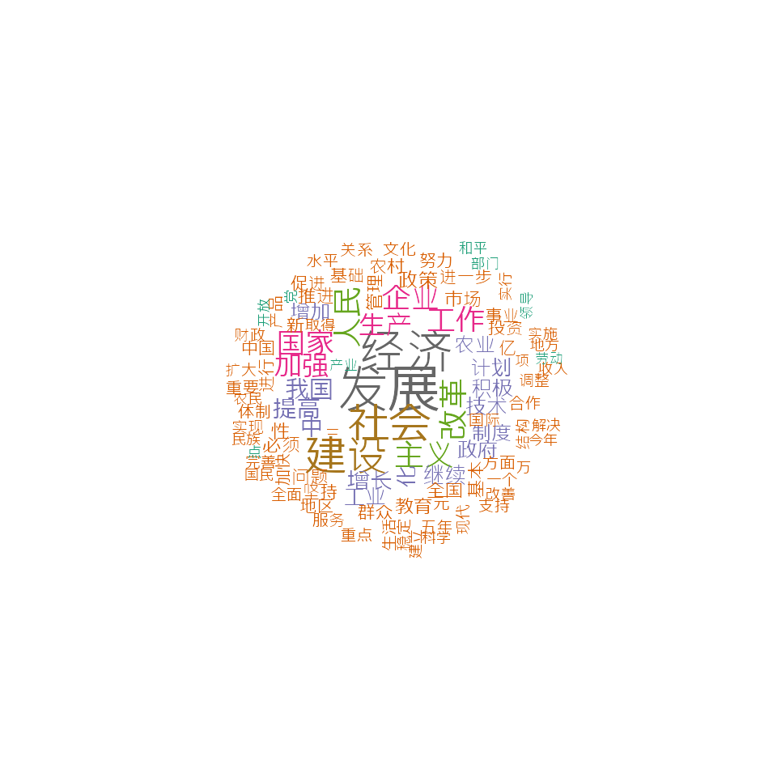

Example: Chinese text analysis
Haiyan Wang
Source:vignettes/pkgdown/examples/chinese.Rmd
chinese.RmdThis vignette demonstrates that quanteda can be used for analysis of Chinese language texts.
Download corpus
Download corpus constructed from Report on the Work of the Government published by Premier of the State Council between 1954 and 2017. You can download the corpus using the quanteda.corpora package.
# read text files
remotes::install_github("quanteda/quanteda.corpora")
library("quanteda.corpora")
corp <- quanteda.corpora::download(url = "https://www.dropbox.com/s/37ojd5knz1qeyul/data_corpus_chinesegovreport.rds?dl=1")Tokenization
# Chinese stopwords
ch_stop <- stopwords("zh", source = "misc")
# tokenize
toks_ch <- corp |>
tokens(remove_punct = TRUE) |>
tokens_remove(pattern = ch_stop)
# Construct a dfm
dfmat_ch <- dfm(toks_ch)
# Get most frequent features
topfeatures(dfmat_ch)
## 发展 经济 社会 建设 改革 人民 主义 工作 企业 国家
## 5627 5036 4255 4248 2931 2897 2817 2642 2627 2595Analysis
Word cloud
# Plot a word cloud
set.seed(100)
# to set the font correctly for macOS
library("quanteda.textplots")
textplot_wordcloud(dfmat_ch, min_count = 500, random_order = FALSE,
rotation = .25, max_words = 100,
min_size = 0.5, max_size = 2.8,
font = if (Sys.info()['sysname'] == "Darwin") "SimHei" else NULL,
color = RColorBrewer::brewer.pal(8, "Dark2"))
Feature co-occurrence matrix
# fcm within the window size of 5
corp_ch17 <- corpus_subset(corp, Year == "2017")
toks_ch17 <- corp_ch17 |>
tokens(remove_punct = TRUE) |>
tokens_remove(ch_stop)
fcmat_ch <- corp_ch17 |>
tokens() |>
fcm(context = "window", window = 5) Unsupervised document scaling
In this example, we run a Wordfish model to show how to apply an unspervised document scaling method to Chinese texts.
library("quanteda.textmodels")
tmod_wf <- textmodel_wordfish(dfmat_ch)
y <- 1954:2017
y <- y[y <= 1964 | y >= 1975]
y <- y[!y %in% c(1963, 1961, 1962, 1976, 1977)]
plot(y, tmod_wf$theta, xlab = "Year", ylab = "Position")Collocations
# bigrams cross the whole dataset
library("quanteda.textstats")
tstat_col_ch <- textstat_collocations(toks_ch, size = 2, min_count = 20)
knitr::kable(head(tstat_col_ch, 10))| collocation | count | count_nested | length | lambda | z |
|---|---|---|---|---|---|
| 社会 主义 | 1787 | 0 | 2 | 5.667646 | 128.76439 |
| 亿 元 | 689 | 0 | 2 | 7.451647 | 93.09479 |
| 现代 化 | 632 | 0 | 2 | 6.956866 | 83.62882 |
| 体制 改革 | 504 | 0 | 2 | 5.199483 | 77.47483 |
| 五年 计划 | 341 | 0 | 2 | 5.365465 | 71.73289 |
| 各级 政府 | 306 | 0 | 2 | 6.116987 | 66.70430 |
| 增长 百分 | 300 | 0 | 2 | 5.527159 | 65.95692 |
| 万 吨 | 212 | 0 | 2 | 6.596337 | 62.62405 |
| 国民 经济 | 589 | 0 | 2 | 6.021117 | 61.87053 |
| 充分 发挥 | 191 | 0 | 2 | 6.590507 | 61.30822 |
# bigrams in 2017 report
tstat_col_ch17 <- textstat_collocations(toks_ch17, size = 2)
knitr::kable(head(tstat_col_ch17, 10))| collocation | count | count_nested | length | lambda | z |
|---|---|---|---|---|---|
| 人民 群众 | 12 | 0 | 2 | 5.406843 | 12.89491 |
| 亿 元 | 14 | 0 | 2 | 8.302839 | 12.62184 |
| 调 控 | 11 | 0 | 2 | 7.593829 | 12.41301 |
| 政府 工作 | 9 | 0 | 2 | 4.710228 | 11.07990 |
| 深入 实施 | 8 | 0 | 2 | 5.018592 | 10.92455 |
| 党 中央 | 7 | 0 | 2 | 5.747235 | 10.90905 |
| 体制 改革 | 11 | 0 | 2 | 5.317394 | 10.53589 |
| 国内 生产 | 6 | 0 | 2 | 6.166877 | 10.48876 |
| 现代 化 | 8 | 0 | 2 | 5.706046 | 10.43500 |
| 基础 设施 | 7 | 0 | 2 | 7.549629 | 10.42514 |